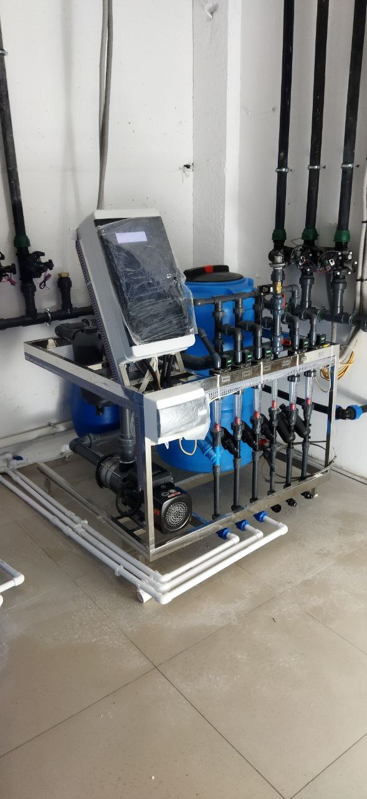
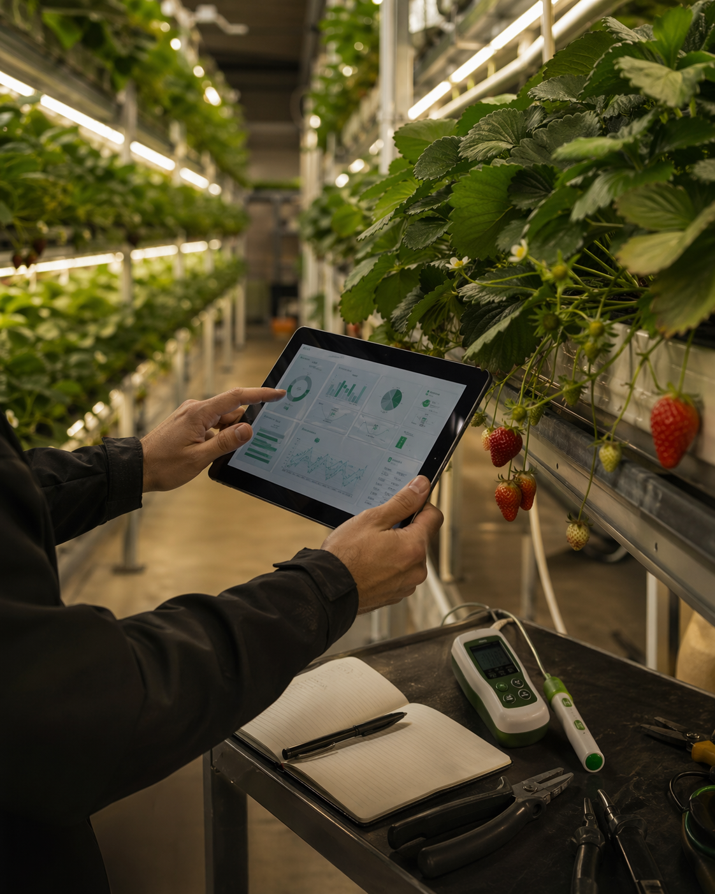
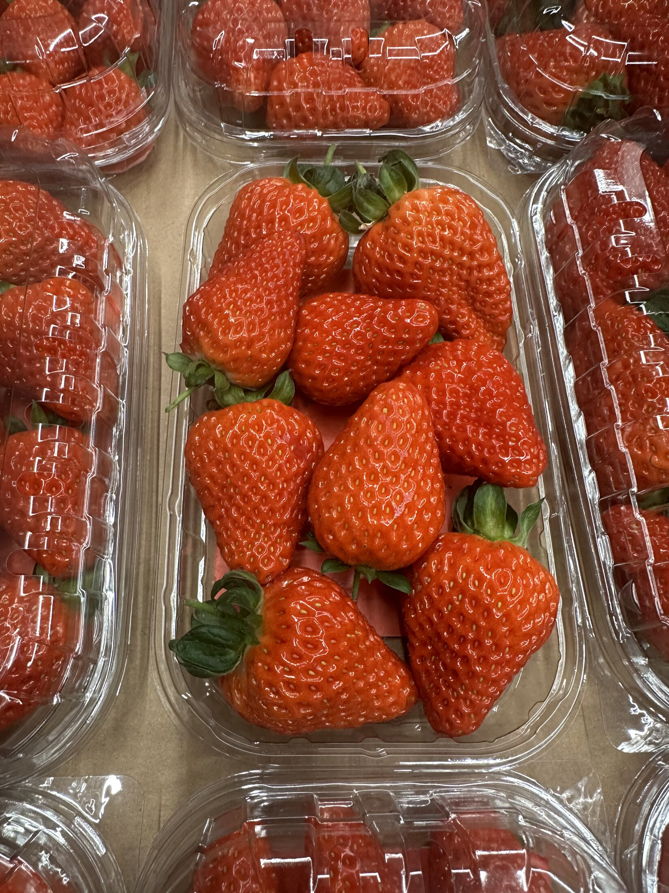

стеллажи, свет, полив, питание, посадочный материал и расходники
Klubnika Project / ферма под расчет
Клубничная ферма: расчет, комплектация и запуск
Я помогаю пройти путь от идеи до рабочей системы: посчитать площадь и бюджет, подобрать свет, стеллажи, полив и понять, что понадобится до первого урожая.
Если идея уже зацепила
Сначала проверяем вводные, потом собираем ферму
Если вы уже смотрели видео про клубничные фермы и хотите понять, реально ли запустить свою, начните с вводных: площадь, помещение, бюджет, цель и готовность заниматься технологией.
01
Посчитать площадь и бюджет
получить первый ориентир по масштабу, комплекту и следующему шагу
02
Разобрать ферму как систему
свет, стеллажи, полив, питание, климат и агрономия работают вместе
03
Посмотреть практику
фото, видео, ягода, ошибки запуска и реальные узлы системы
04
Разобраться в технологии
курс помогает понять растение, свет, полив, питание и ошибки до запуска

Сначала считаем
Понять состав и бюджет до закупки
До покупки стеллажей и света стоит увидеть всю систему целиком: сколько растений помещается, какие узлы нужны и где могут появиться ограничения по помещению.
Посчитать ферму
После расчета видно
что купить, сколько это стоит и что проверить дальше
не одна общая сумма, а разбивка, где находится основная стоимость
его можно скачать и прислать мне, чтобы обсудить конкретное помещение
Это не окончательная смета, а первый ориентир для разговора: что подходит, что нужно уточнить и где не стоит спешить с покупкой.
Ферма как система
Ферма работает только как связка решений
До закупки важно согласовать всю цепочку: площадь, ярусы, свет, полив, питание, климат и протокол выращивания. Ошибка в одном узле меняет требования ко всем остальным.

Что связываем до закупки
площадь -> ярусы -> свет -> климат -> полив -> питание -> протокол
Считаем, сколько посадок реально обслуживать, какие проходы нужны и где появятся узкие места.
LED влияет не только на фотосинтез, но и на тепловую нагрузку, влажность и вентиляцию.
Подача, раствор, EC/pH и дренаж должны совпадать с субстратом и фазой растения.
Сорт, посадка и стадии развития задают режимы, контрольные точки и работу после запуска.
Запуск и первый цикл
вводные -> расчет -> объект -> комплектация -> посадка -> сопровождение
Вводные и расчет
понимаем цель, площадь, бюджет и считаем посадку, ярусы, свет и полив
на выходе: виден масштаб и состав фермыПроверка объекта
проверяем электричество, воду, дренаж, климат, проходы и монтажные ограничения
на выходе: список рисков до оплатыКомплектация
фиксируем узлы системы, очередность закупки, сроки и монтажную логику
на выходе: список закупки и порядок монтажаПосадка и контроль
запускаем растения, раствор, полив, наблюдение и первые корректировки
на выходе: ферма входит в рабочий циклНовый продукт
Клубничный Хак
Курс для тех, кто хочет разобраться в технологии до запуска или параллельно с проектом фермы: растение, свет, климат, полив, питание, качество ягоды и ошибки, которые дорого исправлять на объекте.

не смета оборудования
а база, чтобы понимать технологию и решения на ферме

Следующий шаг
Telegram - самый быстрый путьОбсудить ферму
Напишите вводные в свободной форме. Если точных данных пока нет, достаточно города, площади и того, что хотите запустить.
Быстрее всего
Написать в Telegram
Отправьте вводные сразу в чат: так проще уточнить детали и не потерять контекст.
Написать в Telegram